📝 Repaso de la unidad
Actividades de repaso
Escribe tu respuesta y después pulsa «Ver la solución» para corregirla tú. Los puntos dicen el nivel: ● básico, ●●● ampliación.
Indica en qué cuadrante o eje está cada punto: \(A(5, -2)\), \(B(-1, -1)\), \(C(0, 4)\), \(D(-6, 3)\), \(E(2, 0)\).
Solución
\(A\): IV; \(B\): III; \(C\): eje \(Y\); \(D\): II; \(E\): eje \(X\).
¿Cómo te ha ido?
Escribe las coordenadas de un punto que esté:
- En el segundo cuadrante.
- En el eje de abscisas, a la izquierda del origen.
- A la misma distancia de los dos ejes, en el cuarto cuadrante.
Solución
Por ejemplo:
- \((-2, 5)\)
- \((-3, 0)\)
- \((4, -4)\)
¿Cómo te ha ido?
Representa los puntos en unos ejes e indica en qué cuadrante o eje está cada uno.
- \(A(2, 5)\)
- \(B(-3, 1)\)
- \(C(-4, -2)\)
- \(D(0, -3)\)
- \(E(5, 0)\)
- \(F(3, -4)\)
Solución
a) I b) II c) III d) Eje \(Y\) e) Eje \(X\) f) IV
¿Cómo te ha ido?
¿Dónde está un punto si…
- sus dos coordenadas son negativas?
- su abscisa es positiva y su ordenada negativa?
- su abscisa es 0?
- su abscisa es negativa y su ordenada positiva?
Solución
a) III b) IV c) Eje \(Y\) d) II
¿Cómo te ha ido?
Indica en qué cuadrante o en qué eje está cada punto.
- \((3, -2)\)
- \((-5, 0)\)
- \((0, 4)\)
- \((-1, -6)\)
- \((-2, 7)\)
Solución
a) 4.º b) Eje X c) Eje Y d) 3.º e) 2.º
¿Cómo te ha ido?
Dado el punto \(A(4, 3)\), escribe las coordenadas de su simétrico respecto al eje X, respecto al eje Y y respecto al origen.
Solución
Eje X: \((4, -3)\). Eje Y: \((-4, 3)\). Origen: \((-4, -3)\).
¿Cómo te ha ido?
Escribe las coordenadas de cada punto.
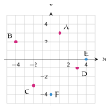
Solución
\(A(1, 3)\), \(B(-4, 2)\), \(C(-2, -3)\), \(D(3, -1)\), \(E(4, 0)\) y \(F(0, -4)\).
¿Cómo te ha ido?
Indica la abscisa y la ordenada de cada punto.
- \(P(-7, 2)\)
- \(Q(0, -5)\)
- \(R(3, 3)\)
- \(S(-1, 0)\)
Solución
- Abscisa \(-7\), ordenada 2.
- Abscisa 0, ordenada \(-5\).
- Abscisa 3, ordenada 3.
- Abscisa \(-1\), ordenada 0.
¿Cómo te ha ido?
Di si es verdadero o falso y explica por qué.
- El punto \((0, 0)\) está en el primer cuadrante.
- Todos los puntos del eje \(Y\) tienen la abscisa igual a 0.
- El punto \((-2, -5)\) está en el tercer cuadrante.
- \((4, -1)\) y \((-1, 4)\) están en el mismo cuadrante.
Solución
- Falso: es el origen, no está en ningún cuadrante.
- Verdadero.
- Verdadero: las dos coordenadas son negativas.
- Falso: \((4, -1)\) está en el IV y \((-1, 4)\), en el II.
¿Cómo te ha ido?
Escribe tres puntos del eje \(X\) y tres del eje \(Y\). ¿Qué coordenada vale siempre 0 en cada eje?
Solución
Por ejemplo, \((2, 0)\), \((-5, 0)\), \((7, 0)\) y \((0, 1)\), \((0, -3)\), \((0, 6)\). En el eje \(X\) vale 0 la ordenada y en el eje \(Y\), la abscisa.
¿Cómo te ha ido?
¿A qué punto llegas con cada movimiento?
- Desde el origen, 3 a la derecha y 2 hacia abajo.
- Desde el origen, 4 a la izquierda y 1 hacia arriba.
- Desde \((-1, 4)\), 5 a la derecha y 6 hacia abajo.
- Desde \((2, -3)\), 2 a la izquierda y 3 hacia arriba.
Solución
a) \((3, -2)\) b) \((-4, 1)\) c) \((4, -2)\) d) \((0, 0)\)
¿Cómo te ha ido?
En una partida de los barcos sobre unos ejes, un barco ocupa las casillas \((2, 3)\), \((3, 3)\) y \((4, 3)\).
- ¿Está colocado en horizontal o en vertical?
- Si disparas a \((3, 2)\), ¿tocas el barco?
- Escribe las casillas de un barco vertical de tres casillas que empiece en \((-2, -1)\) y suba.
Solución
- En horizontal: la ordenada es siempre 3.
- No.
- \((-2, -1)\), \((-2, 0)\) y \((-2, 1)\).
¿Cómo te ha ido?
Representa los puntos \(A(-2, -1)\), \(B(3, -1)\), \(C(3, 2)\) y \(D(-2, 2)\) y únelos en orden. ¿Qué figura obtienes? ¿Cuánto miden sus lados?
Solución
Un rectángulo de 5 por 3 unidades.
¿Cómo te ha ido?
\(A(1, 1)\), \(B(4, 1)\) y \(C(4, 4)\) son tres vértices de un cuadrado. ¿Cuál es el cuarto?
Solución
\(D(1, 4)\)
¿Cómo te ha ido?
Ana dice que los puntos \((3, -2)\) y \((-2, 3)\) son el mismo porque tienen los mismos números. Explica por qué se equivoca.
Solución
\((3, -2)\) está en el cuarto cuadrante y \((-2, 3)\), en el segundo.
¿Cómo te ha ido?
Representa los puntos \(A(-2, 1)\), \(B(4, 1)\), \(C(4, 4)\) y \(D(-2, 4)\) y únelos en orden.
- ¿Qué figura se forma?
- Calcula su perímetro y su área contando cuadritos.
Solución
- Un rectángulo de 6 por 3 unidades.
- Perímetro: 18 unidades. Área: 18 unidades cuadradas.
¿Cómo te ha ido?
En GeoGebra escribe A=(1,1), B=(5,1), C=(5,4) y Polígono(A,B,C).
- ¿Qué tipo de triángulo es?
- ¿Qué área indica GeoGebra? Compruébala con la fórmula.
- Escribe
Distancia(A,C). ¿Cuánto mide el lado más largo?
📐 Ábrelo en GeoGebra Prueba la actividad moviendo los puntos y los deslizadores.
Solución
- Rectángulo.
- 6.
- 5.
¿Cómo te ha ido?
Calcula la distancia entre cada par de puntos contando cuadritos.
- \(A(-3, 2)\) y \(B(5, 2)\)
- \(C(1, -4)\) y \(D(1, 3)\)
- \(E(-6, -1)\) y \(F(-2, -1)\)
- \(G(0, -5)\) y \(H(0, 5)\)
Solución
a) 8 b) 7 c) 4 d) 10
¿Cómo te ha ido?
Representa los puntos \(A(-3, -3)\), \(B(0, 0)\), \(C(2, 2)\) y \(D(4, 4)\).
- ¿Están alineados?
- ¿Qué tienen en común sus coordenadas?
- Escribe otros dos puntos de esa recta.
Solución
- Sí.
- La abscisa y la ordenada son iguales.
- Por ejemplo, \((1, 1)\) y \((-2, -2)\).
¿Cómo te ha ido?
Escribe las coordenadas del punto que está justo en medio de cada pareja.
- \((2, 3)\) y \((8, 3)\)
- \((-4, 1)\) y \((-4, 7)\)
- \((-3, -2)\) y \((5, -2)\)
Solución
a) \((5, 3)\) b) \((-4, 4)\) c) \((1, -2)\)
¿Cómo te ha ido?
Dibuja el triángulo de vértices \(A(1, 1)\), \(B(4, 1)\) y \(C(1, 3)\) y su simétrico respecto al eje \(Y\). ¿Qué coordenadas tienen los nuevos vértices \(A'\), \(B'\) y \(C'\)?
Solución
\(A'(-1, 1)\), \(B'(-4, 1)\) y \(C'(-1, 3)\): cambia el signo de la abscisa.
¿Cómo te ha ido?
Mueve el cuadrilátero \(A(0, 0)\), \(B(2, 0)\), \(C(3, 2)\), \(D(1, 2)\) 4 unidades a la izquierda y 3 hacia abajo.
- Escribe las coordenadas de los nuevos vértices.
- ¿Cambian la forma o el tamaño de la figura?
Solución
- \(A'(-4, -3)\), \(B'(-2, -3)\), \(C'(-1, -1)\) y \(D'(-3, -1)\).
- No, solo cambia de sitio.
¿Cómo te ha ido?
En este plano el ayuntamiento está en el origen y cada cuadrito son 100 m. Están marcados la biblioteca (\(B\)), el polideportivo (\(P\)), la estación (\(E\)) y el parque (\(Q\)).
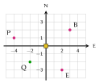
- Escribe las coordenadas de cada lugar.
- ¿Qué lugar está más al sur? ¿Cuál está en el tercer cuadrante?
- ¿Cuántos metros hay del polideportivo a la biblioteca yendo por las calles de la cuadrícula?
Solución
- \(B(3, 2)\), \(P(-4, 1)\), \(E(2, -3)\) y \(Q(-2, -2)\).
- La estación. El parque.
- \(7 + 1 = 8\) cuadritos: 800 m.
¿Cómo te ha ido?
Dibuja un rectángulo de área 12 unidades cuadradas que tenga un vértice en el origen, dos lados sobre los ejes y esté en el segundo cuadrante. Escribe sus vértices. ¿Hay una sola solución?
Solución
Por ejemplo, \((0, 0)\), \((-4, 0)\), \((-4, 3)\) y \((0, 3)\). Hay más: de \(1 \times 12\), \(2 \times 6\), \(3 \times 4\), \(4 \times 3\), \(6 \times 2\) y \(12 \times 1\).
¿Cómo te ha ido?
\(A(-1, -2)\) y \(B(3, -2)\) son dos vértices seguidos de un cuadrado. Halla los otros dos. ¿Cuántas soluciones hay?
Solución
El lado mide 4. Hay dos soluciones: \((3, 2)\) y \((-1, 2)\), o bien \((3, -6)\) y \((-1, -6)\).
¿Cómo te ha ido?
Completa la tabla de \(y = 4x\) para \(x = 0, 1, 2, 3, -1\).
Solución
\(0, 4, 8, 12, -4\)
¿Cómo te ha ido?
La tabla recoge la temperatura de un día de primavera.
| Hora | 8 | 10 | 12 | 14 | 16 | 18 |
| Tª (ºC) | 4 | 7 | 11 | 13 | 12 | 9 |
- Representa los datos en una gráfica.
- ¿Cuál fue la temperatura máxima y a qué hora?
- ¿Entre qué horas subió más la temperatura?
Solución
- Gráfica.
- 13 ºC a las 14 h.
- Entre las 10 y las 12 h.
¿Cómo te ha ido?
Completa la tabla para \(y = 3x - 2\) y representa los puntos.
| \(x\) | \(-2\) | \(-1\) | \(0\) | \(1\) | \(2\) |
| \(y\) |
Solución
\(-8\), \(-5\), \(-2\), \(1\) y \(4\). Los puntos quedan alineados.
¿Cómo te ha ido?
Indica la variable independiente y la dependiente en cada caso.
- El número de entradas de cine y lo que se paga.
- El tiempo que está abierto un grifo y los litros que hay en la bañera.
- El lado de un cuadrado y su perímetro.
- Los días de vacaciones y el dinero gastado.
Solución
Independiente y dependiente:
- Número de entradas; precio.
- Tiempo; litros.
- Lado; perímetro.
- Días; dinero gastado.
¿Cómo te ha ido?
Una entrada a un museo cuesta 6 €. Completa la tabla del precio de 1, 2, 3, 4 y 5 entradas y escribe los pares \((x, y)\) que representarías.
Solución
6, 12, 18, 24 y 30 €. \((1, 6)\), \((2, 12)\), \((3, 18)\), \((4, 24)\) y \((5, 30)\).
¿Cómo te ha ido?
La gráfica muestra la altura de Leo en sus cumpleaños. Fíjate en que el eje vertical empieza en 80 cm.
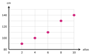
- ¿Cuánto medía con 6 años?
- ¿A qué edad medía 130 cm?
- ¿Cuánto creció de los 2 a los 10 años?
- ¿Entre qué cumpleaños creció más?
Solución
- 110 cm.
- A los 8 años.
- 50 cm.
- Entre los 6 y los 8 años: 20 cm.
¿Cómo te ha ido?
Completa cada tabla con la fórmula que se indica.
- \(y = x + 4\) para \(x = -3, -2, -1, 0, 1\)
- \(y = 10 - 2x\) para \(x = 0, 1, 2, 3, 4\)
Solución
- 1, 2, 3, 4 y 5.
- 10, 8, 6, 4 y 2.
¿Cómo te ha ido?
Escribe los pares de esta tabla y represéntalos. ¿Están alineados?
| \(x\) | \(-2\) | \(-1\) | 0 | 1 | 2 |
| \(y\) | 4 | 1 | 0 | 1 | 4 |
Solución
\((-2, 4)\), \((-1, 1)\), \((0, 0)\), \((1, 1)\) y \((2, 4)\). No están alineados: forman una curva en forma de U.
¿Cómo te ha ido?
Marta tiene 15 € en la hucha y cada semana mete 5 €. Haz una tabla con el dinero que tiene desde la semana 0 hasta la 5. ¿Cuánto tendrá en la semana 10?
Solución
15, 20, 25, 30, 35 y 40 €. En la semana 10, 65 €.
¿Cómo te ha ido?
Completa la tabla de \(y = 2x - 1\) para \(x = -2, -1, 0, 1, 2\) y representa los puntos. ¿Están alineados?
Solución
\(-5, -3, -1, 1, 3\). Sí, están en una recta.
¿Cómo te ha ido?
Completa la tabla de \(y = -x + 3\) para \(x = -2, -1, 0, 1, 2, 3\) y representa los puntos. ¿Están alineados?
Solución
\(5, 4, 3, 2, 1, 0\). Sí, están en una recta que baja.
¿Cómo te ha ido?
Estas son las alturas de una planta de judía medidas cada semana:
| Semana | 0 | 1 | 2 | 3 | 4 | 5 |
| Altura (cm) | 2 | \(3{,}5\) | 5 | \(6{,}5\) | 8 | \(9{,}5\) |
- Representa los datos. ¿Cuánto crece cada semana?
- Si sigue igual, ¿cuánto medirá en la semana 8?
Solución
- \(1{,}5\) cm cada semana.
- 14 cm.
¿Cómo te ha ido?
Escribe en una hoja de cálculo las horas 9, 10, 11, 12, 13, 14 y 15 en la columna A, y las temperaturas 12, 14, 17, 19, 18, 15 y 13 ºC en la columna B. Selecciona los datos e inserta un gráfico de líneas.
- ¿A qué hora se alcanza la temperatura máxima?
- ¿Entre qué horas sube la temperatura? ¿Y entre cuáles baja?
- ¿En qué hora sube más?
Solución
- A las 12.
- Sube de 9 a 12 y baja de 12 a 15.
- Entre las 10 y las 11.
¿Cómo te ha ido?
Haz la tabla de valores de los puntos marcados.
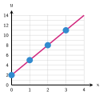
- ¿Cuánto aumenta \(y\) cada vez que \(x\) aumenta 1?
- Si sigue igual, ¿cuánto valdrá \(y\) para \(x = 5\)?
Solución
\(x\): 0, 1, 2, 3; \(y\): 2, 5, 8, 11.
- Aumenta 3.
- 17.
¿Cómo te ha ido?
Estos son los habitantes de un pueblo en los últimos años:
| Año | 2020 | 2021 | 2022 | 2023 | 2024 | 2025 |
| Habitantes | 1200 | 1250 | 1300 | 1280 | 1350 | 1400 |
- ¿Qué escala usarías en el eje vertical? Representa los datos.
- ¿En qué año bajó la población?
- ¿Cuántos habitantes ganó el pueblo entre 2020 y 2025?
Solución
- Respuesta abierta. Por ejemplo, de 50 en 50 empezando en 1150, avisando de que no empieza en 0.
- En 2023.
- 200 habitantes.
¿Cómo te ha ido?
Escribe en la columna A los meses de enero a junio y en la columna B la lluvia de cada mes: 120, 95, 110, 80, 70 y 45 l/m\(^2\). Inserta un gráfico de columnas.
- ¿Qué mes llovió más? ¿Y menos?
- Escribe en B8 la fórmula
=SUMA(B2:B7). ¿Cuánto llovió en total? - ¿Entre qué dos meses seguidos bajó más la lluvia?
Solución
- Enero. Junio.
- 520 l/m\(^2\).
- Entre marzo y abril: 30 l/m\(^2\).
¿Cómo te ha ido?
Una caja vacía pesa 2 kg y cada botella de agua que se mete pesa \(1{,}5\) kg.
- Haz una tabla con el peso de la caja con 0, 1, 2, 3, 4, 5 y 6 botellas.
- ¿Cuántas botellas lleva si pesa 14 kg?
- Al representarla, ¿tiene sentido unir los puntos? ¿Por qué?
Solución
- 2; \(3{,}5\); 5; \(6{,}5\); 8; \(9{,}5\) y 11 kg.
- 8 botellas.
- No: no se pueden meter trozos de botella, así que solo hay puntos sueltos.
¿Cómo te ha ido?
Di en qué casos tiene sentido unir los puntos de la gráfica.
- La temperatura medida cada hora.
- El precio según el número de cuadernos que compras.
- La altura de un niño según su edad.
- Las personas que suben a un autobús en cada parada.
Solución
- Sí: la temperatura cambia de forma continua.
- No: el número de cuadernos es entero.
- Sí: crece de forma continua.
- No: las paradas son datos sueltos.
¿Cómo te ha ido?
Se mide la temperatura de un vaso de leche caliente que se deja enfriar:
| Minutos | 0 | 5 | 10 | 15 | 20 | 25 |
| Tª (ºC) | 80 | 60 | 46 | 36 | 30 | 26 |
- Representa los datos.
- ¿Cuántos grados bajó en los 5 primeros minutos? ¿Y entre el minuto 20 y el 25?
- ¿Baja siempre lo mismo?
Solución
- Gráfica.
- 20 ºC. 4 ºC.
- No, cada vez baja menos.
¿Cómo te ha ido?
Temperatura en Alto Campoo durante una noche de invierno:
| Hora | 0 | 2 | 4 | 6 | 8 | 10 | 12 |
| Tª (ºC) | \(-1\) | \(-3\) | \(-5\) | \(-6\) | \(-4\) | 0 | 3 |
- Representa los datos. ¿Qué parte del eje vertical necesitas?
- ¿Cuál fue la temperatura mínima y a qué hora?
- ¿A qué hora estuvo a 0 ºC? ¿Cuántos grados subió de las 6 a las 12?
Solución
- Hay que llegar hasta \(-6\), por debajo del eje \(X\).
- \(-6\) ºC a las 6 h.
- A las 10 h. Subió 9 ºC.
¿Cómo te ha ido?
Pablo ha hecho la tabla de \(y = 2x + 3\), pero se ha equivocado en dos valores. ¿Cuáles son? Corrígelos.
| \(x\) | 0 | 1 | 2 | 3 |
| \(y\) | 2 | 5 | 7 | 10 |
Solución
Para \(x = 0\), \(y = 3\), y para \(x = 3\), \(y = 9\).
¿Cómo te ha ido?
Escribe la fórmula que relaciona \(x\) e \(y\) en cada tabla.
a)
| \(x\) | 1 | 2 | 3 | 4 |
| \(y\) | 3 | 4 | 5 | 6 |
b)
| \(x\) | 1 | 2 | 3 | 4 |
| \(y\) | 5 | 10 | 15 | 20 |
c)
| \(x\) | 0 | 1 | 2 | 3 |
| \(y\) | 1 | 3 | 5 | 7 |
d)
| \(x\) | 1 | 2 | 3 | 4 |
| \(y\) | 9 | 8 | 7 | 6 |
Solución
a) \(y = x + 2\) b) \(y = 5x\) c) \(y = 2x + 1\) d) \(y = 10 - x\)
¿Cómo te ha ido?
Lee el texto y contesta.
Nora nació con \(3{,}2\) kg. El primer mes engordó 1 kg; el segundo, \(0{,}9\) kg, y el tercero, \(0{,}7\) kg. Al cumplir cuatro meses pesaba \(6{,}4\) kg. La pediatra dice que es normal que los bebés engorden cada mes un poco menos.
- Haz una tabla con su peso desde el mes 0 hasta el 4.
- ¿Cuánto engordó el cuarto mes?
- Representa los datos. ¿Tiene sentido unir los puntos?
Solución
- \(3{,}2\); \(4{,}2\); \(5{,}1\); \(5{,}8\) y \(6{,}4\) kg.
- \(0{,}6\) kg.
- Sí: el peso cambia de forma continua.
¿Cómo te ha ido?
Todos estos rectángulos tienen 20 cm de perímetro. Completa la tabla con la altura y el área según la base.
| Base (cm) | 1 | 2 | 3 | 4 | 5 | 6 | 7 | 8 | 9 |
| Altura (cm) | 9 | ||||||||
| Área (cm\(^2\)) | 9 |
- Representa la gráfica base-área. ¿Es una recta?
- ¿Qué base da el área mayor? ¿Qué figura es?
Solución
Altura: 9, 8, 7, 6, 5, 4, 3, 2, 1. Área: 9, 16, 21, 24, 25, 24, 21, 16, 9.
- No: sube y luego baja.
- Base 5 cm: es un cuadrado de 25 cm\(^2\).
¿Cómo te ha ido?
Con palillos se forma una fila de cuadrados pegados: para 1 cuadrado hacen falta 4 palillos; para 2, 7 palillos; para 3, 10 palillos…
- Haz una tabla para 1, 2, 3, 4 y 5 cuadrados.
- Escribe la fórmula del número de palillos \(y\) según los cuadrados \(x\).
- ¿Cuántos palillos hacen falta para 20 cuadrados?
- Con 100 palillos, ¿cuántos cuadrados completos puedes hacer?
Solución
- 4, 7, 10, 13 y 16.
- \(y = 3x + 1\).
- 61 palillos.
- 33 cuadrados, porque \(3 \cdot 33 + 1 = 100\).
¿Cómo te ha ido?
Observa la gráfica y contesta.
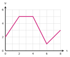
- ¿Entre qué valores de \(x\) crece? ¿Y decrece? ¿Dónde es constante?
- ¿Cuál es el valor máximo de \(y\)? ¿Y el mínimo?
Solución
- Crece de 0 a 2 y de 6 a 8. Decrece de 4 a 6. Constante de 2 a 4.
- Máximo: 5. Mínimo: 1, en \(x = 6\).
¿Cómo te ha ido?
La gráfica muestra la temperatura máxima de cada día de una semana.
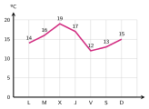
- ¿Qué día hizo más calor? ¿Y menos?
- ¿Qué días subió la temperatura respecto al día anterior?
Solución
- El miércoles, 19 ºC. El viernes, 12 ºC.
- Martes, miércoles, sábado y domingo.
¿Cómo te ha ido?
¿Qué significa un tramo horizontal en cada gráfica?
- Tiempo y distancia a casa.
- Tiempo y temperatura.
- Tiempo y litros de un depósito.
- Tiempo y velocidad de un coche.
Solución
- Que está parado.
- Que la temperatura no cambia.
- Que no entra ni sale agua.
- Que va siempre a la misma velocidad (¡no está parado!).
¿Cómo te ha ido?
La gráfica muestra la distancia de Lara a su casa mientras va andando al colegio.
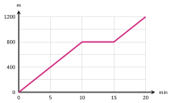
- ¿A qué distancia de su casa está el colegio?
- Lara se para a esperar a una amiga. ¿Entre qué minutos? ¿A qué distancia de casa?
- ¿Cuánto tarda en total?
Solución
- A 1200 m.
- Del minuto 10 al 15, a 800 m.
- 20 minutos.
¿Cómo te ha ido?
Relaciona cada situación con su gráfica.
- Altura de una niña que sube despacio la escalera de un tobogán y se tira.
- Temperatura de un vaso de agua templada que se mete en la nevera.
- Dinero de una hucha en la que se mete lo mismo cada semana.
Solución
a) C b) A c) B
¿Cómo te ha ido?
Una clase sale de excursión. La gráfica describe la distancia al colegio:
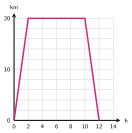
- ¿A qué distancia está el lugar de la excursión?
- ¿Cuánto tiempo están allí?
- ¿Cuánto tardan en volver?
Solución
- 20 km
- 8 horas
- 2 horas
¿Cómo te ha ido?
La gráfica muestra la distancia a casa de Iker durante un paseo en bici.
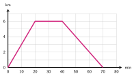
- ¿A qué distancia máxima de casa llega?
- ¿Cuánto tiempo está parado?
- ¿Tarda más a la ida o a la vuelta?
- ¿A qué velocidad va a la ida, en km/h?
Solución
- 6 km
- 20 minutos
- A la vuelta.
- 18 km/h
¿Cómo te ha ido?
La gráfica muestra la altura sobre el punto de salida de un grupo de montañeros durante una excursión.
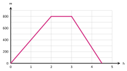
- ¿Qué altura máxima alcanzan?
- ¿Cuánto tiempo descansan arriba?
- ¿Cuántos metros suben cada hora? ¿Y cuántos bajan cada hora?
Solución
- 800 m.
- 1 hora.
- Suben 400 m por hora y bajan unos 533 m por hora.
¿Cómo te ha ido?
Un horno está a 20 ºC. Al encenderlo, la temperatura sube de forma constante hasta 180 ºC en 10 minutos. Se mantiene así durante 30 minutos, se apaga y en 20 minutos baja hasta 60 ºC.
- Dibuja la gráfica de la temperatura en función del tiempo.
- ¿Qué temperatura había en el minuto 5?
- ¿Cuánto tiempo dura todo el proceso?
Solución
- Segmentos que unen \((0, 20)\), \((10, 180)\), \((40, 180)\) y \((60, 60)\).
- 100 ºC.
- 60 minutos.
¿Cómo te ha ido?
Dibuja, sin números, una gráfica que represente cada situación.
- La velocidad de un coche que está parado en un semáforo, arranca y luego circula a velocidad constante.
- La altura de una pelota que se deja caer desde una ventana y bota dos veces.
- El agua de una bañera que se llena, alguien se baña y después se vacía.
Solución
- Horizontal en 0, sube y queda horizontal.
- Baja hasta 0 y bota dos veces, cada vez más bajo.
- Sube, queda horizontal y baja hasta 0.
¿Cómo te ha ido?
Lee el texto y contesta.
En la bahía de Santander el mar sube y baja dos veces al día. Al nivel más alto se le llama pleamar y al más bajo, bajamar. Ayer hubo pleamar a las 6:00, con el agua a \(4{,}8\) m; bajamar a las 12:10, con \(0{,}9\) m, y otra pleamar a las 18:20, con \(4{,}6\) m. Los pescadores de la ría aprovechan la bajamar para buscar almejas.
- ¿Cuántos metros bajó el agua entre la primera pleamar y la bajamar?
- ¿Cuánto tiempo pasó entre la pleamar y la bajamar? ¿Y entre la bajamar y la siguiente pleamar?
- Haz un esbozo de la gráfica de la altura del agua entre las 6:00 y las 18:20.
- A las 9:00, ¿el agua estaba subiendo o bajando? ¿Era buen momento para buscar almejas a las 12:00?
Solución
- \(3{,}9\) m.
- 6 h 10 min en los dos casos.
- Baja de \(4{,}8\) m (6:00) a \(0{,}9\) m (12:10) y sube a \(4{,}6\) m (18:20).
- Bajando. Sí.
¿Cómo te ha ido?
La gráfica muestra los litros de agua de un depósito a lo largo de una mañana.
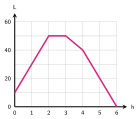
- ¿Cuántos litros había al principio?
- ¿Cuál es la cantidad máxima de agua? ¿Durante cuánto tiempo la hay?
- ¿Cuándo se llena y cuándo se vacía?
- ¿Cuántos litros entran cada hora mientras se llena?
Solución
- 10 L.
- 50 L, de la hora 2 a la 3.
- Se llena de 0 a 2 h y se vacía de 3 a 6 h.
- 20 L.
¿Cómo te ha ido?
La gráfica muestra la distancia de un autobús a la estación de salida.
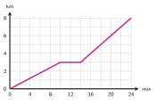
- ¿Cuántos kilómetros recorre? ¿Cuánto tarda?
- ¿Cuánto tiempo está parado y a qué distancia de la estación?
- ¿En qué tramo va más rápido? ¿Cómo se ve en la gráfica?
- ¿Qué velocidad lleva en ese tramo, en km/h?
Solución
- 8 km en 24 minutos.
- 4 minutos, a 3 km.
- En el segundo: la línea está más inclinada.
- 5 km en 10 minutos: 30 km/h.
¿Cómo te ha ido?
Una tienda vendió 98 bicis en enero, 100 en febrero y 104 en marzo. En su anuncio pone esta gráfica:
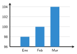
- ¿Cuántas bicis más vendió en marzo que en enero?
- ¿Por qué parece que las ventas se han multiplicado por 4?
- ¿Cómo habría que dibujarla para que no engañe?
Solución
- 6 bicis.
- Porque el eje vertical empieza en 96, no en 0.
- Con el eje vertical empezando en 0.
¿Cómo te ha ido?
La gráfica muestra la batería de un móvil a lo largo de un día.
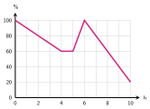
- ¿Cuánto baja la batería cada hora durante las 4 primeras horas?
- ¿Qué pasa entre la hora 4 y la 5? ¿Y entre la 5 y la 6?
- Si sigue gastándose como en el último tramo, ¿a qué hora se agotará?
Solución
- Un 10 % cada hora.
- No se gasta (está apagado). Se carga hasta el 100 %.
- Baja un 20 % por hora: se agota a la hora 11.
¿Cómo te ha ido?
La gráfica muestra la distancia de Hugo a su casa durante una salida en bici. Inventa una historia que encaje con ella, con tiempos y distancias.
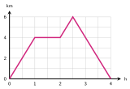
Solución
Respuesta abierta. Por ejemplo: en 1 h llega a 4 km de casa, descansa 1 h, recorre 2 km más en media hora y vuelve a casa en hora y media.
¿Cómo te ha ido?
La gráfica muestra la altura de una pelota lanzada hacia arriba.
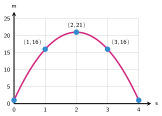
- ¿Desde qué altura se lanza?
- ¿Cuál es la altura máxima y en qué momento la alcanza?
- ¿En qué momentos está a 16 m del suelo?
- ¿Cuándo sube y cuándo baja?
Solución
- Desde 1 m.
- 21 m, a los 2 segundos.
- Al segundo 1 y al segundo 3.
- Sube de 0 a 2 s y baja de 2 a 4 s.
¿Cómo te ha ido?
Lee el texto y contesta.
Un grupo sale en kayak desde el muelle de Astillero a las 10:00. Reman 3 km por la ría y llegan a una playa a los 45 minutos. Allí paran media hora para bañarse. Al volver, la marea va en contra y tardan una hora en llegar al muelle.
- ¿A qué hora llegan a la playa? ¿Y a qué hora salen de ella?
- ¿A qué hora vuelven al muelle?
- Haz un esbozo de la gráfica tiempo-distancia al muelle.
- ¿Van más rápido a la ida o a la vuelta? ¿Cómo se ve en la gráfica?
Solución
- A las 10:45. A las 11:15.
- A las 12:15.
- Sube hasta 3 km, horizontal de 10:45 a 11:15 y baja hasta 0 a las 12:15.
- A la ida: el tramo de subida está más inclinado que el de bajada.
¿Cómo te ha ido?
Dibuja una gráfica tiempo-distancia a casa que represente esta historia: «Lucía sale de casa andando hacia el quiosco, se para a comprar y vuelve corriendo a casa». Explica la forma de cada tramo.
Solución
Respuesta abierta. Sube despacio, horizontal y baja más inclinado hasta 0.
¿Cómo te ha ido?
La gráfica muestra la distancia recorrida por dos ciclistas que salen del mismo sitio.
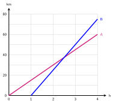
- ¿Cuál sale antes? ¿Cuál va más rápido? Calcula sus velocidades.
- ¿Cuándo y a qué distancia alcanza B a A?
Solución
- A. B. A va a 15 km/h y B, a 25 km/h.
- A las \(2{,}5\) h, a \(37{,}5\) km.
¿Cómo te ha ido?
Una gráfica representa la distancia de Raúl a su casa a lo largo del tiempo. Explica por qué no es posible que tenga un tramo vertical ni que retroceda hacia la izquierda.
Solución
A cada instante le corresponde una sola distancia y el tiempo no va hacia atrás.
¿Cómo te ha ido?
Lee el texto y contesta.
La liebre y la tortuga hacen una carrera de 100 m. La tortuga camina sin parar a 2 m por minuto. La liebre recorre los primeros 60 m en 3 minutos y, segura de ganar, se echa a dormir. Se despierta en el minuto 49 y corre los 40 m que le faltan en 2 minutos.
- Dibuja en los mismos ejes las gráficas de la distancia recorrida por cada una.
- ¿Dónde estaba la tortuga cuando la liebre se despertó?
- ¿En qué minuto adelantó la tortuga a la liebre dormida?
- ¿Quién ganó y por cuánto tiempo?
Solución
- Tortuga: de \((0, 0)\) a \((50, 100)\). Liebre: \((0, 0)\), \((3, 60)\), \((49, 60)\) y \((51, 100)\).
- En el metro 98.
- En el minuto 30.
- La tortuga, por 1 minuto.
¿Cómo te ha ido?
Ana y Bea viven a 6 km. A la vez, Ana sale andando hacia casa de Bea y Bea sale hacia casa de Ana. La gráfica muestra la distancia de cada una a casa de Ana.
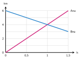
- ¿Quién va más rápido? Calcula las dos velocidades.
- ¿Cuándo y dónde se encuentran?
- ¿Cuánto le falta a Bea para llegar a casa de Ana a la hora y media?
Solución
- Ana: 4 km/h. Bea: 2 km/h.
- A la hora, a 4 km de casa de Ana.
- 3 km.
¿Cómo te ha ido?
Con el mismo grifo se llenan tres recipientes de la misma altura: un vaso cilíndrico, un vaso más ancho arriba que abajo y una botella ancha abajo y estrecha arriba. Esboza la gráfica tiempo-altura del agua de cada uno y explica su forma.
Solución
Cilindro: una recta, sube siempre igual. Vaso ancho arriba: sube rápido al principio y cada vez más despacio. Botella: sube despacio al principio y cada vez más rápido.
¿Cómo te ha ido?
¡Cuidado! Esta gráfica no muestra la distancia, sino la velocidad de un coche.
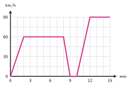
- ¿Cuál es la velocidad máxima?
- ¿Está parado entre los minutos 2 y 8? ¿Qué hace?
- ¿Cuándo está parado?
- ¿En qué tramos acelera?
Solución
- 90 km/h.
- No: va a 60 km/h todo el rato.
- Del minuto 9 al 10 (y al empezar, en el minuto 0).
- Del minuto 0 al 2 y del 10 al 12.
¿Cómo te ha ido?
¿Cuáles de estos puntos pertenecen a la gráfica de \(y = 3x\)?
- \((2, 6)\)
- \((-1, -3)\)
- \((4, 10)\)
- \((0, 0)\)
Solución
\((2, 6)\), \((-1, -3)\) y \((0, 0)\)
¿Cómo te ha ido?
Un litro de gasolina cuesta \(1{,}60\) €. Haz una tabla con el precio de 5, 10, 20 y 40 litros y representa la gráfica. ¿Qué tipo de relación es?
Solución
8, 16, 32 y 64 €. Proporcionalidad directa.
¿Cómo te ha ido?
Las magnitudes \(x\) e \(y\) son directamente proporcionales. Completa la tabla y escribe la fórmula.
| \(x\) | 1 | 2 | 4 | 10 | |
| \(y\) | 3 | 12 | 15 |
Solución
\(y\): 6 y 30; \(x\): 5. Fórmula: \(y = 3x\).
¿Cómo te ha ido?
Escribe la expresión de la recta que pasa por el origen y por el punto dado.
- \((1, 4)\)
- \((2, 10)\)
- \((3, 6)\)
- \((4, 2)\)
Solución
a) \(y = 4x\) b) \(y = 5x\) c) \(y = 2x\) d) \(y = \frac{1}{2}x\)
¿Cómo te ha ido?
Haz una tabla con \(x = -1, 0, 1, 2\) y di si cada recta sube o baja de izquierda a derecha. ¿Pasan todas por el origen?
- \(y = 4x\)
- \(y = -3x\)
- \(y = x\)
- \(y = -2x\)
Solución
a) \(-4, 0, 4, 8\): sube. b) \(3, 0, -3, -6\): baja. c) \(-1, 0, 1, 2\): sube. d) \(2, 0, -2, -4\): baja. Sí, todas pasan por el origen.
¿Cómo te ha ido?
Cada fotocopia cuesta \(0{,}05\) €. Haz una tabla con el precio de 10, 20, 50 y 100 fotocopias y escribe la fórmula. ¿Cuántas fotocopias puedes hacer con 3 €?
Solución
\(0{,}50\); 1; \(2{,}50\) y 5 €. \(y = 0{,}05x\). 60 fotocopias.
¿Cómo te ha ido?
Un gimnasio cobra 20 € de matrícula y 15 € al mes. Escribe la expresión del precio \(y\) según los meses \(x\) y calcula cuánto se paga en 6 meses. ¿Es una relación de proporcionalidad?
Solución
\(y = 15x + 20\); 110 €. No.
¿Cómo te ha ido?
¿Cuáles de estas tablas corresponden a una proporcionalidad directa? Explica cómo lo sabes.
| \(x\) | 1 | 2 | 3 | 4 |
| \(y\) | 3 | 6 | 9 | 12 |
| \(x\) | 1 | 2 | 3 | 4 |
| \(y\) | 2 | 4 | 7 | 8 |
| \(x\) | 2 | 4 | 6 |
| \(y\) | 5 | 10 | 15 |
| \(x\) | 1 | 2 | 4 |
| \(y\) | 12 | 6 | 3 |
Solución
La primera y la tercera.
¿Cómo te ha ido?
Un kilo de tomates cuesta 2 €. Haz una tabla con el precio de 1, 2, 3, 4 y 5 kg y representa la gráfica. ¿Cuánto cuestan \(3{,}5\) kg? ¿Qué tipo de relación es?
Solución
2, 4, 6, 8 y 10 €; 7 €. Proporcionalidad directa.
¿Cómo te ha ido?
Escribe en la barra de entrada de GeoGebra \(y = 3x\), \(y = 0.5x\) y \(y = -2x\).
- ¿Qué punto tienen en común las tres gráficas?
- ¿Cómo influye el número que multiplica a \(x\)?
📐 Ábrelo en GeoGebra Prueba la actividad moviendo los puntos y los deslizadores.
Solución
- El origen \((0, 0)\).
- Cuanto mayor es, más inclinada es la recta; si es negativo, baja.
¿Cómo te ha ido?
El recibo del agua tiene una cuota fija de 8 € más \(1{,}50\) € por cada m\(^3\) consumido.
- Haz una tabla con el importe para 0, 5, 10, 15 y 20 m\(^3\).
- Representa la gráfica. ¿Es una proporcionalidad directa? ¿Por qué?
Solución
- 8; \(15{,}50\); 23; \(30{,}50\) y 38 €.
- No.
¿Cómo te ha ido?
Representa los puntos de la tabla y di qué tipo de relación es.
| \(x\) | 1 | 2 | 3 | 4 | 6 |
| \(y\) | 12 | 6 | 4 | 3 | 2 |
Solución
Proporcionalidad inversa.
¿Cómo te ha ido?
Al colgar pesos de un muelle se miden estas longitudes: con 0 g, 10 cm; con 100 g, 12 cm; con 200 g, 14 cm; con 300 g, 16 cm.
- ¿Cuánto medirá con 250 g?
- ¿Qué peso hay que colgar para que mida 20 cm?
- ¿Es la longitud proporcional al peso? ¿Y lo que se alarga?
Solución
- 15 cm.
- 500 g.
- La longitud no. Lo que se alarga sí.
¿Cómo te ha ido?
La gráfica muestra el precio de un queso de Cantabria según los kilos que se compran.
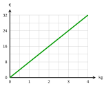
- ¿Cuánto cuestan 2 kg?
- ¿Cuántos kilos se compran con 28 €?
- ¿Es proporcionalidad directa? Escribe su expresión.
Solución
- 16 €.
- \(3{,}5\) kg.
- Sí, es una recta que pasa por el origen: \(y = 8x\).
¿Cómo te ha ido?
En la frutería A las manzanas cuestan 2 € el kilo. En la B cuestan \(1{,}50\) € el kilo, pero cobran 1 € por la bolsa.
- Haz una tabla con lo que cuestan 1, 2, 3 y 4 kg en cada frutería.
- ¿En cuál es el precio proporcional al peso?
- ¿Para cuántos kilos cuestan lo mismo? ¿Dónde conviene comprar 4 kg?
Solución
- A: 2, 4, 6 y 8 €. B: \(2{,}50\); 4; \(5{,}50\) y 7 €.
- En la A.
- Para 2 kg. En la B.
¿Cómo te ha ido?
Dani dice: «Los puntos \((1, 3)\), \((2, 5)\) y \((3, 7)\) están en una recta, así que es una proporcionalidad directa». ¿Tiene razón?
Solución
No: la recta no pasa por el origen y los cocientes no son iguales, \(\frac{3}{1} \neq \frac{5}{2}\). Es \(y = 2x + 1\).
¿Cómo te ha ido?
Un tren va siempre a 120 km/h.
- Haz una tabla de la distancia recorrida en 0; \(0{,}5\); 1; 2 y 3 horas.
- Escribe la fórmula y di qué tipo de relación es.
- ¿Cuánto tarda en recorrer 300 km?
Solución
- 0, 60, 120, 240 y 360 km.
- \(y = 120x\). Proporcionalidad directa.
- \(2{,}5\) horas.
¿Cómo te ha ido?
En un mapa, cada centímetro son 2 km reales.
- Haz una tabla con la distancia real para 1, 3, 5 y 8 cm del mapa.
- Escribe la fórmula y dibuja la gráfica.
- ¿Cuántos centímetros del mapa son 13 km?
Solución
- 2, 6, 10 y 16 km.
- \(y = 2x\): una recta que pasa por el origen.
- \(6{,}5\) cm.
¿Cómo te ha ido?
Supón que 1 € equivale a \(1{,}10\) dólares. Escribe en la columna A los euros 0, 10, 20… hasta 100 y en B2 la fórmula =A2*1,1; cópiala hacia abajo e inserta un gráfico de dispersión.
- ¿Cuántos dólares son 50 €? ¿Y 80 €?
- ¿Están los puntos en una recta que pasa por el origen? Escribe la fórmula.
- ¿Cuántos euros son 33 dólares?
Solución
- 55 y 88 dólares.
- Sí: \(y = 1{,}1x\).
- 30 €.
¿Cómo te ha ido?
Una piscina tiene 2 m de profundidad y se llena a razón de 25 cm por hora. Haz una tabla y la gráfica de la altura del agua durante las primeras horas. ¿Cuánto tarda en llenarse? ¿Es una relación de proporcionalidad directa?
Solución
8 horas. Sí.
¿Cómo te ha ido?
Una vela de 20 cm se consume 2 cm cada hora.
- Haz una tabla con su altura desde 0 hasta 5 horas.
- ¿Cuándo se apaga la vela?
- ¿Es una relación de proporcionalidad directa? Razona tu respuesta.
Solución
- 20, 18, 16, 14, 12 y 10 cm
- A las 10 horas.
- No.
¿Cómo te ha ido?
La tarifa A cuesta 10 € al mes más \(0{,}05\) € por minuto. La tarifa B no tiene cuota y cobra \(0{,}10\) € por minuto.
- Haz una tabla con lo que se paga con cada tarifa por 0, 100, 200 y 300 minutos.
- Representa las dos gráficas. ¿Cuándo cuestan lo mismo?
- ¿Qué tarifa conviene a quien habla 150 minutos? ¿Y a quien habla 300?
Solución
- A: 10, 15, 20 y 25 €. B: 0, 10, 20 y 30 €.
- Con 200 minutos.
- Con 150 minutos, la B. Con 300, la A.
¿Cómo te ha ido?
Sin dibujar, ordena estas rectas de más a menos inclinada. ¿Cuál pasa por el punto \((2, 6)\)?
- \(y = x\)
- \(y = 5x\)
- \(y = \frac{1}{2}x\)
- \(y = 3x\)
Solución
\(y = 5x\), \(y = 3x\), \(y = x\) e \(y = \frac{1}{2}x\). Pasa por \((2, 6)\) la recta \(y = 3x\).
¿Cómo te ha ido?
Para hacer un bizcocho para 4 personas se usan 200 g de harina, y el horno tarda siempre 40 minutos.
- Haz una tabla con la harina para 2, 4, 6, 8 y 10 personas y escribe la fórmula.
- ¿Para cuántas personas llegan 750 g de harina?
- ¿Es proporcional el tiempo de horno al número de personas? ¿Cómo sería su gráfica?
Solución
- 100, 200, 300, 400 y 500 g. \(y = 50x\).
- Para 15 personas.
- No: es siempre 40 minutos, una recta horizontal.
¿Cómo te ha ido?
Di si cada relación es de proporcionalidad directa. Si lo es, escribe su fórmula.
- Los kilos de pan, a 3 € el kilo, y su precio.
- El lado de un cuadrado y su perímetro.
- El lado de un cuadrado y su área.
- Las horas en un aparcamiento que cobra 2 € al entrar y 1 € por hora.
Solución
- Sí: \(y = 3x\).
- Sí: \(y = 4x\).
- No: con lados 1, 2 y 3 las áreas son 1, 4 y 9.
- No: \(y = x + 2\) no pasa por el origen.
¿Cómo te ha ido?
🧩 Paso a paso
Así se resuelven los ejercicios tipo de la unidad. Cada bloque es una orden, como en Scratch: los bloques se leen de arriba abajo y los que tienen forma de C se repiten o solo se hacen si se cumple la condición.